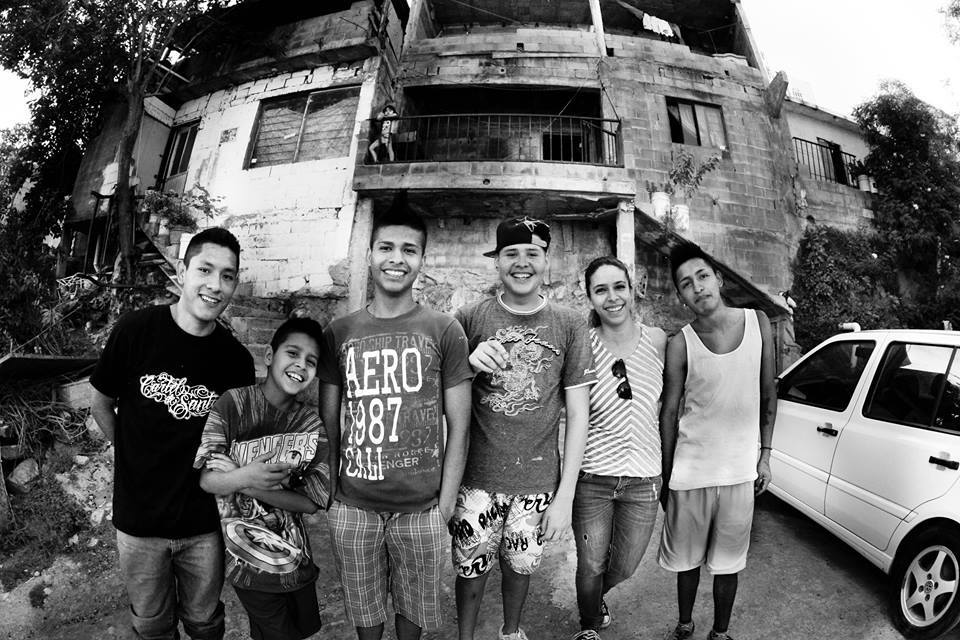
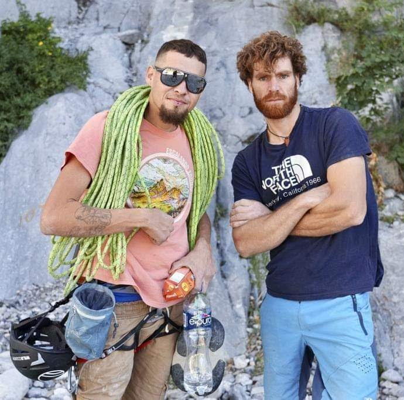
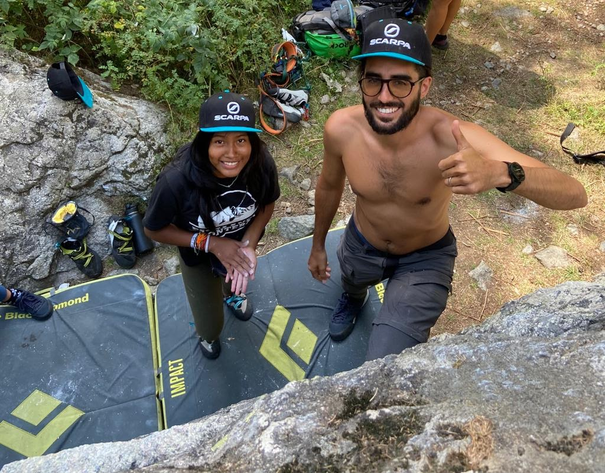
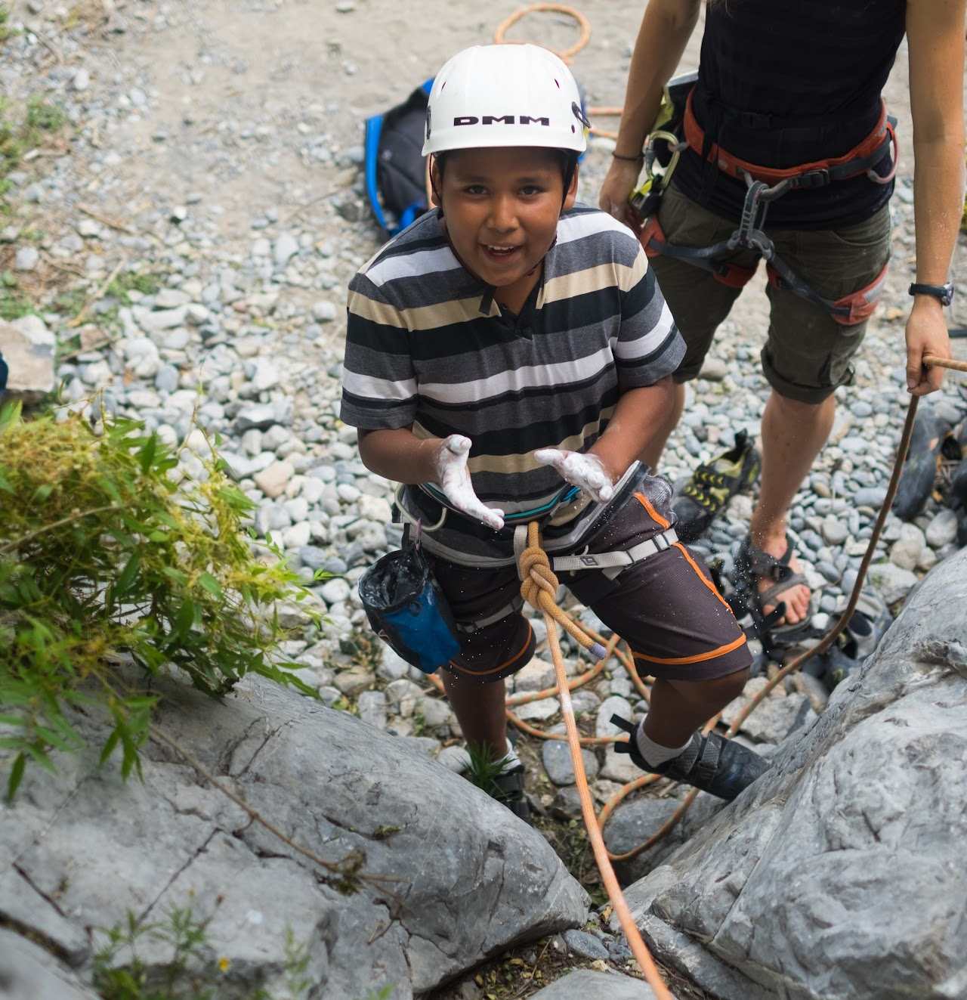

Conoce el viaje de Escalando Fronteras desde 2014 hasta hoy, transformando vidas a través del deporte y la educación.

EF comenzó a trabajar con la juventud de Lomas Modelo Norte a inicios de 2014. Los co-fundadores fueron Worral Mathews, un estadounidense investigador sobre pandillerismo y desarrollo juvenil, y Nadia Vázquez, doctora en Ciencias Sociales por el Tec de Monterrey.
Para iniciar, el programa se apoyó en una campaña de recaudación de fondos virtual que logró atraer la mirada internacional. Escaladores profesionales de varias partes del mundo han venido a escalar con EF y se han convertido en embajadores del proyecto. El gimnasio de escalada Delta Climbing Gym decidió abrir sus puertas a los participantes de Escalando Fronteras de forma gratuita.

Descubre la inspiradora historia de Escalando Fronteras a través de nuestro documental oficial.

Los domingos era día de asueto, pero también uno de los días con mayor riesgo para la niñez, ya que los fines de semana presentan un mayor consumo de alcohol y drogas por los habitantes de la colonia. Las salidas a escalar significan una oportunidad para conocer opciones alternativas de esparcimiento y convivencia entre pares.
Con el apoyo de la comunidad nacional e internacional, así como las convocatorias para el desarrollo social del gobierno de Nuevo León, EF se ha convertido en una asociación que ha incorporado actividades adicionales a la escalada como los de sexualidad y convivencia familiar, dirigidos a las familias de los participantes. Más allá de formar buenos escaladores, nuestro objetivo es que los niños y niñas de hoy se conviertan en adultos felices y ciudadanos responsables.

Sé parte del cambio y ayuda a transformar más vidas a través del deporte y la educación.
Dona Ahora Volver al Inicio